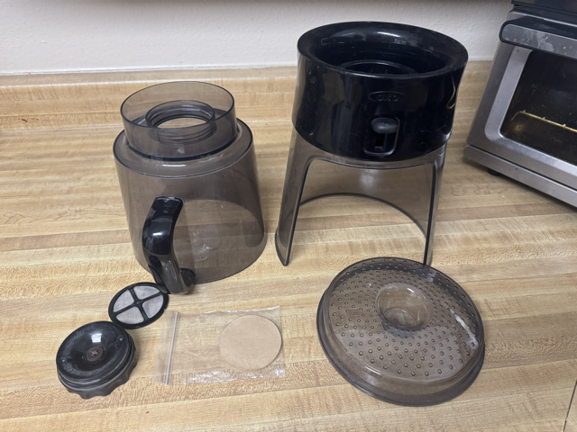
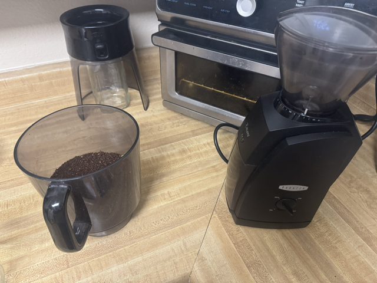

How to Make Cold-Brew Coffee Concentrate
Step 1: Assemble the Brewer
Collect the brewer's parts:
- The main brewer vessel
- The brewer lid
- The mesh filter
- Optional: a circular paper filter
- The stopper spout
To assemble:
- Turn the brewer vessel upside down
- Insert the mesh filter in the threaded port
- If using a paper filter, insert the filter in the threaded port
- Screw in the stopper spout into the brewer vessel

Step 2: Measure out the Beans
This step requires:
- A four-cup mason jar
- A wide-mouth funnel
- A digital scale (with grams measurements)
- Coffee beans (of course)
- The cold-brew brewer
Turn on the scale, then place the jar (topped with the funnel) on the scale. Don't forget to tare (zero out) the scale so the weight is accurate. Ensure the scale is in grams (not ounces).
Pour beans into the jar until the scale reads 280 grams.
Do not brew more than 280 grams of coffee.

Step 3: Grind the Beans
- Set the grind to coarse (near the coarsest setting on the grinder)
- Pour the beans into the hopper until it is full
- Turn on the grinder until the grounds bin is full
- Wait 2-3 minutes before pulling out the grounds bin (reduces static cling)
Empty the grounds into the brewer. Repeat until all beans have been ground.
Do not let the grind overfill in the hopper as this can damage the machine.

Step 4: Measure the Water
Place the used mason jar on the digital scale and tare (zero out). Once the scale reads "0" with the jar on it, fill the jar most of the way with filtered water. Place the jar on the scale and note how many grams of water are in the jar.
Empty the water into the brewer and repeat until 1200 grams of water have been added to the grounds in the brewer.
Do not add more than 1200 grams of water to the concentrate.

Step 5: Mix the Water and Grounds
Using a large spatula, stir the grounds and water until all grounds appear saturated. Wait 2 minutes and stir once more before lidding the brewer.
Make sure the dispensing lever is in the "up" position. Do not pull the lever down until the concentrate is ready to dispense.
 1
1Step 6: Wait and Drain
Move the brewer to a cool location (room temperature). Do not place in cold storage and keep out of direct sunlight. Place a mason jar or carafe under the drain of the brewer.
After 24 hours, drain the cold brew by pressing down on the brewer's lever. It may take up to 30 minutes to extract all coffee from the brewer.
As a reminder, this recipe is for cold brew concentrate. The ratio for making drinkable coffee is one part concentrate to two parts water. Example: 4 oz. concentrate + 8 oz. water for a combined 12 oz. of cold brew coffee.